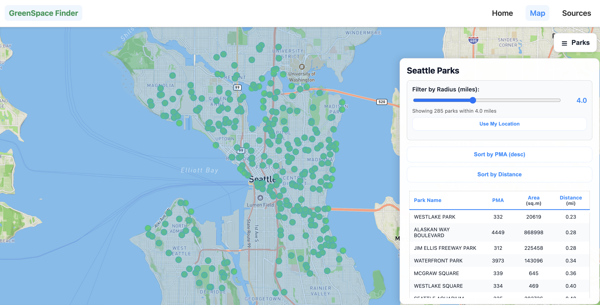

Discover parks, trails, and community gardens near you — with walking distances, amenity details, accessibility filters, and an interactive WebGIS map built for community exploration of Seattle's green spaces.

GreenSpace Finder is a community-focused WebGIS application that helps Seattle residents locate nearby public parks, trails, and community gardens. Users can explore green spaces from their current location or by dropping a pin, then view rich detail panels showing amenities, walking distances, and accessibility features.
Built as a team of four for GEOG 458 at the University of Washington, the app layers City of Seattle park data, King County neighborhood boundaries, and OpenStreetMap contributor data into a unified interactive map experience.
Datasets
Park Boundary Dataset — City of Seattle Open Data Portal. Accessed Dec 5.
Neighborhoods Dataset — King County GIS Open Data. Accessed Dec 5.
Amenities / Trails / Additional Layers — OpenStreetMap Contributors. Accessed Dec 5.
City of Seattle. Park Boundaries. Seattle Open Data Portal, https://data.seattle.gov. Accessed Dec 5.
King County GIS Center. Neighborhoods. King County GIS Open Data, https://gis-kingcounty.opendata.arcgis.com. Accessed Dec 5.
OpenStreetMap Contributors. OpenStreetMap Data. OpenStreetMap, https://www.openstreetmap.org. Accessed Dec 5.
Built for community & outdoor exploration by Jonny, Oswaldo, Nur, and Rishi.